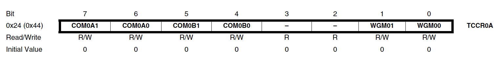
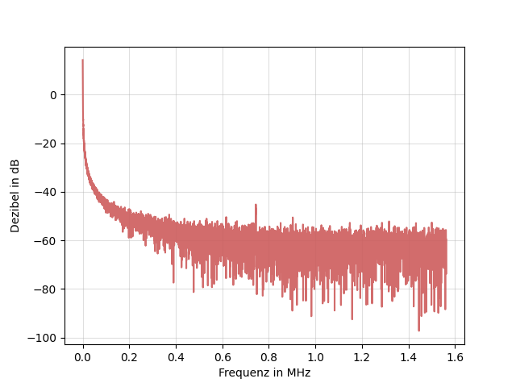

Timer/Counter0 für die Pulsweitenmodulation mit dem Atmega2560
1. Übersicht
Der Timer/Counter0 ist ein 8-Bit-Zählermodul mit zwei unabhängigen Vergleichseinheiten und Unterstützung für die Pulsweitenmodulation (PWM). Diese Funktion ermöglicht die präzise Steuerung eines generierten Signals.
Das folgende Blockdiagramm illustriert den Ablauf:
Abb. 1.1: Blockdiagramm
2. Register Überblick
Die wichtigsten Register sind:
- TCNT0 (Timer/Counter)
- OCR0A und OCR0B (Output Compare Register)
Diese 8-Bit-Register können individuell programmiert werden. Interrupts werden über das Timer Interrupt Mask Register (TIMSK0) konfiguriert.
Der Timer/Counter kann mit dem internen Mikrokontroller-Takt oder einem externen Taktgeber am Pin T0 betrieben werden. Bei Nutzung des internen Takts kann der Prescaler im Register TCCR0B angepasst werden, um die Timer-Frequenz zu skalieren. Die Berechnung wird später genauer erläutert.
Die OCR0A- und OCR0B-Register werden fortlaufend mit dem Zählerwert verglichen. Das Ergebnis dieses Vergleichs kann zur Signalerzeugung genutzt werden.
3. Detaillierte Registeranalyse für PWM
3.1. TCCR0A
Im TCCR0A-Register wird das Bit WGM01 gesetzt, um den Timer in den Clear Timer on Compare Match (CTC)-Modus zu versetzen. In diesem Modus zählt der Timer bis zu einem definierten Wert und wird anschließend zurückgesetzt.
Abb. 3.1: TCCR0A 
3.2. TCCR0B
Im TCCR0B-Register wird das Bit CS01 gesetzt, um den CPU-Takt mit einem Prescaler von 8 zu verwenden.
Abb. 3.2: TCCR0B
3.3. OCR0A
3.3.1. Funktion
Das OCR0A-Register enthält einen 8-Bit-Wert, der mit dem Zähler verglichen wird. Bei Übereinstimmung kann ein Interrupt ausgelöst werden, der zur PWM genutzt wird. Mit einem Prescaler von 8 wird alle 100 µs ein Interrupt generiert.
Abb. 3.3: OCR0A
3.3.2. Berechnung des Vergleichswertes
Das Ziel ist eine PWM mit 20 Hz für Servomotoren. Die Timer-Frequenz ergibt sich aus dem CPU-Takt und dem Prescaler:
Ein Timerimpuls wird alle 0,1 ms benötigt:
Der Vergleichswert ergibt sich zu:
3.4. TIMSK0
Im TIMSK0-Register wird das Bit OCIE0A gesetzt, um den Timer0-Interrupt bei einem Compare-Match zu aktivieren.
Abb. 3.4: TCCR0B

4. Grafische Darstellung der PWM
Der modulierte Signalverlauf über 3,5 ms zeigt unterschiedliche Pulsweiten, die zur Servomotorsteuerung genutzt werden.
Positionen des Servomotors:
- 0°: 500 µs
- 90°: 1450 µs
- 180°: 2400 µs
Abb. 4.1: Signal mit minimaler Pulsweite (1 ms)

Abb. 4.2: Signal mit maximaler Pulsweite (2 ms)

5. Frequenzanalyse des PWM-Signals
5.1. Sampling-Frequenz und Auflösung
- Die Sampling-Frequenz f_s = 3,13 MS/s erfüllt das Nyquist-Theorem: $$ f_s > 2 \cdot f_{\text{signal}} $$
5.2. Spektrumverteilung
- Stark gedämpft im höheren Frequenzbereich (< -60 dB).
5.3. Charakteristische Frequenzkomponenten
- Dominante Grundfrequenz sichtbar bei niedriger Frequenz.
5.4. Rauschkomponenten
- Hohes Grundrauschen, besonders bei Frequenzen > 0.5 MHz.
Abb. 5.1 Analyse der Frequenzen 
6. Programmierung der Pulsweitenmodulation
#include "RS232.h"
#include "ADU_ATMEGA2560 V21.h"
#include <avr/io.h>
#include <avr/interrupt.h>
#include <util/delay.h>
#include <Arduino.h>
#define SERVO_1_PIN PE5
#define SERVO_1_DDR DDRE
#define SERVO_1_PORT PORTE
#define SERVO_2_PIN PG5
#define SERVO_2_DDR DDRG
#define SERVO_2_PORT PORTG
volatile uint8_t pulse_length_servo1 = 15;
volatile uint8_t pulse_length_servo2 = 15;
volatile bool move_to_180 = true;
void setup()
{
TCCR0A = (1 << WGM01);
TCCR0B = (1 << CS01);
OCR0A = 199;
TIMSK0 = (1 << OCIE0A);
SERVO_1_DDR |= (1 << SERVO_1_PIN);
SERVO_2_DDR |= (1 << SERVO_2_PIN);
sei();
ADU_Init();
RS232_Init(RS232_NUR_EMPFANGEN);
}
void loop()
{
if (Empfangen == 'u')
{
if (move_to_180)
{
pulse_length_servo1 = 24;
pulse_length_servo2 = 24;
}
else
{
pulse_length_servo1 = 5;
pulse_length_servo2 = 5;
}
move_to_180 = !move_to_180;
Empfangen = 0;
}
}
ISR(TIMER0_COMPA_vect)
{
static uint8_t counter = 0;
if (counter == 0)
{
SERVO_1_PORT |= (1 << SERVO_1_PIN);
SERVO_2_PORT |= (1 << SERVO_2_PIN);
}
if (counter == pulse_length_servo1)
{
SERVO_1_PORT &= ~(1 << SERVO_1_PIN);
}
if (counter == pulse_length_servo2)
{
SERVO_2_PORT &= ~(1 << SERVO_2_PIN);
}
counter++;
if (counter >= 200)
{
counter = 0;
}
}